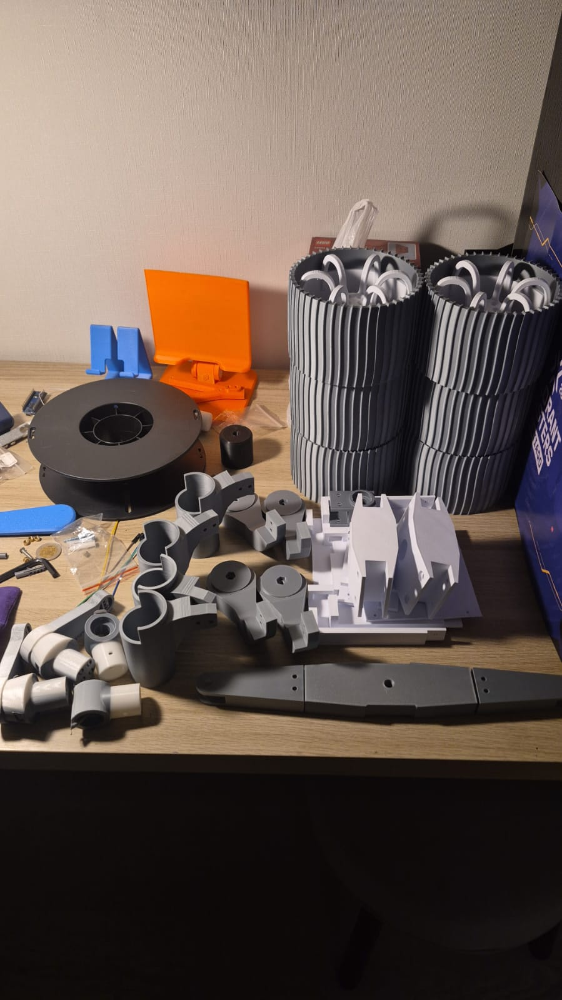
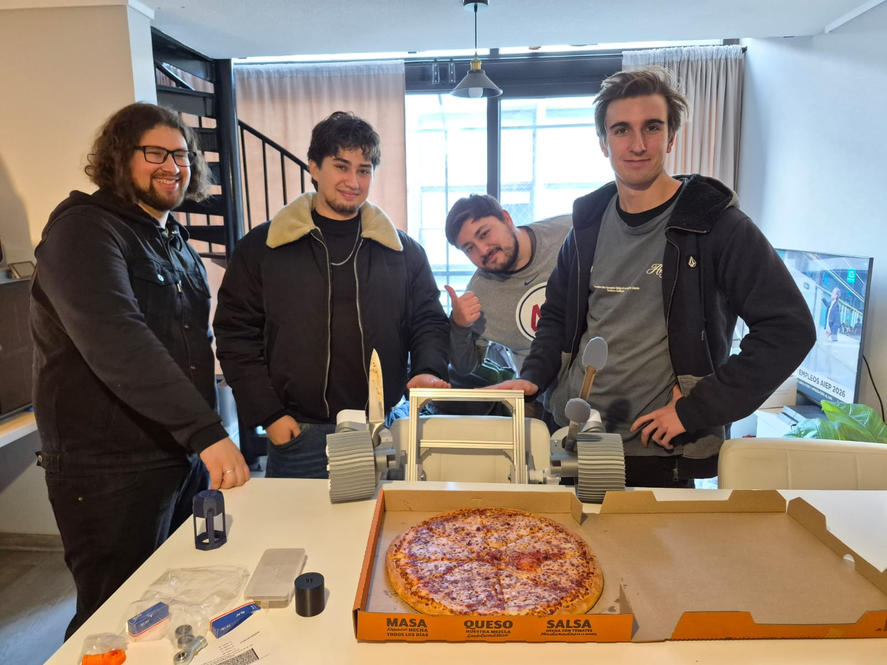

Plataforma robótica terrestre de 6 ruedas inspirada en la arquitectura cinemática del Rover Perseverance de la NASA. Diseñada, impresa en 3D y testeada por estudiantes del USACH Space Program para dominar la suspensión Rocker-Bogie, tracción motriz distribuida y sistemas de telemetría en terreno.
Cinemática pasiva sin amortiguadores para superar obstáculos de hasta 1.5x el radio de rueda.
Fabricación aditiva estructural de alta tenacidad al impacto en alianza con Full 3D.
Torque distribuido independiente en cada eje para mantener tracción en roca y tierra.
Alimentación modular con protección electrónica y balanceo de celdas.
Estructura preparada para integración de sensor LiDAR y brazo manipulador.
El valor de llevar el prototipo más allá del laboratorio: validación de ingeniería en eventos nacionales y vinculación activa con la sociedad.

El Rover Perseverance fue galardonado con el premio a la Mejor Impresión Aplicada en la 3D Printed Party. Este reconocimiento validó la resistencia mecánica y la precisión de encaje de los componentes estructurales de la suspensión Rocker-Bogie y soportes de tracción, modelados por estudiantes del equipo y materializados en PETG técnico con el respaldo de nuestro aliado Full 3D.
Más que un prototipo mecatrónico, el rover se ha consolidado como nuestro principal embajador de divulgación científica y tecnológica. Ha participado en ferias de admisión de la USACH y visitas a establecimientos escolares, permitiendo que niños, niñas y postulantes a carreras de ingeniería vean, toquen y operen un sistema de exploración espacial análoga, acercando la ingeniería aeroespacial a la comunidad.
Adoptamos la geometría Rocker-Bogie empleada por los vehículos de exploración marciana de la NASA. El sistema utiliza una viga basculante ('rocker') articulada con un bogie secundario en cada lateral, vinculados por un diferencial superior. Esto permite que las seis ruedas mantengan contacto continuo con el suelo en pendientes de hasta 45°, distribuyendo la carga de manera uniforme sobre rocas sin recurrir a amortiguadores tradicionales.
El diseño permite al rover sortear rocas y escalones superiores al diámetro de sus propias ruedas manteniendo el cuerpo central estabilizado.

Construir un rover funcional desde cero implicó semanas continuas de modelado CAD, calibración de perfiles térmicos de extrusión y resolución de desalineaciones en los ejes de transmisión. Tuvimos que rediseñar pivotes que fallaron bajo esfuerzo cortante y recalibrar tolerancias mecánicas. Cada pieza defectuosa en el taller fue una lección práctica invaluable de ingeniería y trabajo en equipo.
La experiencia directa en el taller forjó nuestro estándar de diseño y la comprensión real de las tolerancias mecánicas.

Validación funcional de la respuesta motriz, calibración de radioenlace 2.4 GHz y cinemática de giro del prototipo.
Registro fotográfico de las etapas de fabricación de piezas, ensamble inicial y camaradería estudiantil.
Inspección y limpieza de perfiles impresos en PETG técnico para la suspensión.

Alineación de ejes y ensamblaje de los brazos articulados Rocker-Bogie.

Validación de la rigidez torsional del chasis y anclaje de la caja de aviónica.

Tendido de líneas de potencia hacia los 6 motores y prueba de receptores.

El equipo del USACH Space Program tras finalizar el primer ensamble integral.

Celebrando las largas jornadas de taller y el trabajo compartido entre carreras.
Evolución técnica planificada para el Rover hacia mayor autonomía, sensórica avanzada y misiones de campo.
Diseño y fabricación de un brazo robótico articulado con efector final intercambiable para toma de muestras en terreno.
Implementación de cámara de alta resolución con transmisión de baja latencia para operación remota fuera de línea de vista.
Integración de estimación inercial y escaneo tridimensional preliminar para detección y evasión de obstáculos.
Pruebas de campo en zonas áridas y rocosas nacionales simulando las condiciones geológicas de superficies planetarias.
Buscamos estudiantes con ganas de aprender en taller, empresas interesadas en patrocinar instrumental o materiales técnicos de impresión, y colegios que deseen recibir una visita del rover para motivar vocaciones científicas.
Ponte en Contacto con Nosotros ✉